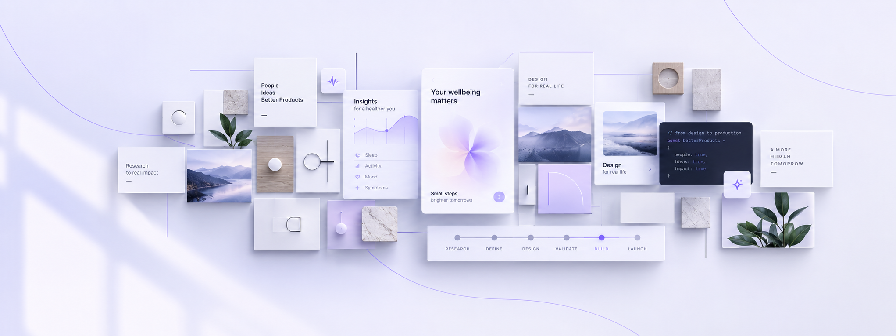

WCAG & button contrast
Does every button need 3:1 contrast?
View my LinkedIn profile ↗
OLESYA LEVYTSKA / SENIOR PRODUCT DESIGNER
Senior Product Designer working across healthcare, SaaS, AI-powered products, and complex B2B/B2C platforms.
Explore my work ↗01 / SELECTED WORK
02 / HOW I WORK
I currently work on products ranging from digital health and AI-powered women's health experiences to complex multi-role SaaS platforms, translating business requirements, user needs, data, and technical constraints into experiences people can actually understand and use.
My approach is strongly product-driven. I use research, user feedback, product analytics, journey mapping, prototyping, and iterative validation to identify problems before investing heavily in implementation — and continue learning from user behaviour after release.
I'm also actively integrating AI-assisted design-to-code workflows into my process. I use tools including Claude, ChatGPT, Cursor and Lovable alongside Figma and GitHub to prototype faster, reduce design-to-development friction, and collaborate more closely with engineering.
I enjoy products where the problem isn't obvious, the workflows are complex, and good design requires understanding the user, business and technology at the same time.
Experience & CV ↗03 / EXPERTISE & TOOLS
Figma · Claude · ChatGPT · Cursor · Lovable · GitHub
04 / PRODUCT DESIGN INSIGHTS
Real insights. Better products. Explore my series on LinkedIn.
Does every button need 3:1 contrast?
View my LinkedIn profile ↗Explore this instalment of my UX series.
Read post on LinkedIn ↗Explore this instalment of my UX series.
Read post on LinkedIn ↗1 / 3